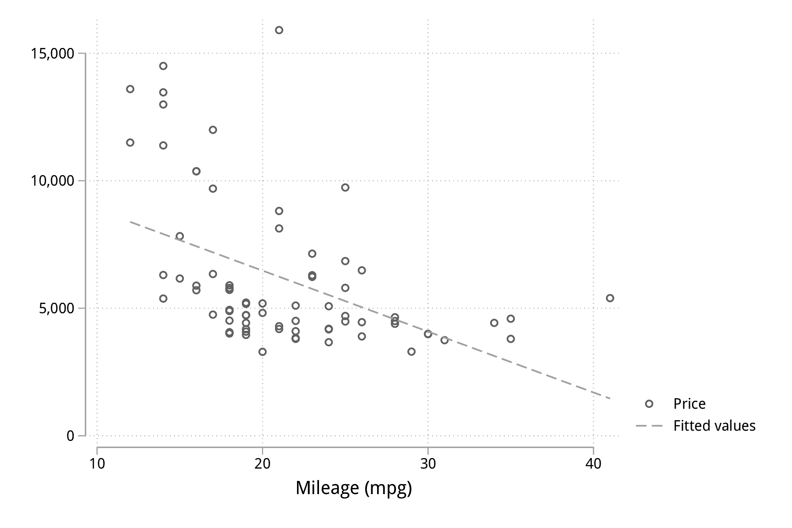
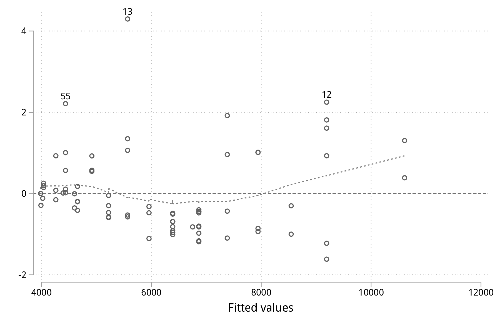

Stata : un rapide tour d’horizon
Table des matières
Ce document présente selon un angle très pragmatique une session de travail typique avec le logiciel Stata. Il ne s’agit pas de couvrir toutes les fonctionnalités de Stata, ni de présenter en détails les principales commandes Stata, voire même la représentation interne des données sus Stata. Au contraire, l’idée est d’offrir un panorama de certaines fonctionnalités de Stata et comment organiser une session de tarvail simple avec comme objectif la réalisation d’un modèle de régression linéaire.
Stata en quelques mots
Stata est un logiciel d’analyses statistiques développé dans les années 80 par une équipe de statisticiens américains, dont William Gould. À l’origine, il s’agissait esentiellement d’un logiciel orienté vers le traitement des enquêtes et des séries chronologiques [2], puis ses fonctionnalités se sont largement développées pour en faire à l’heure actuelle un logiciel très performant dans de nombreux domaines d’application, principalement le traitement des enquêtes [4], l’économétrie [1] ou l’épidémiologie [3]. Les ouvrages publiés par Stata Press incluent en général un ou deux chapitres de présentation des principales commandes Stata.
Une fois installé, Stata est entièrement fonctionnel et dispose de toutes les procédures statistiques et graphiques que l’on attend d’un logiciel statistique. Il est toutefois possible d’installer des modules additionnels depuis internet (www.stata.com, SSC, Github, sites personnels). Mais en règle générale, les commandes de base disponibles dans Stata suffisent largement à couvrir l’essentiel des besoins en termes de gestion de données et d’analyses statistiques.
Une autre caractéristique remarquable de Stata est la qualité de sa documentation. Pour la version 15, on dénombre pas moins 30 manuels en version PDF pour un total de 14791 pages.Ces documents PDF sont accessibles depuis le menu d’aide interne de Stata et se consulte généralement à l’aide d’Acrobat Reader, mais il est toujours possible de consulter le fichier d’index, i.pdf, et de naviguer dans la documentation à partir de celui-ci. Pour bien débuter avec Stata, il est conseillé de lire le manuel [D] (Data management).
En mode interactif, il y a deux manières de travailler avec Stata : en saisissant des instructions dans le panneau de commande ou en utilisant les menus et boîtes de dialogue de l’interface graphique. On privilégira la première option par souci de simplicité pour l’exposé et à plus long terme de reproducibilité des analyses statistiques puisque l’on verra comment enregistrer toutes les commandes dans des fichiers do.
Prise en main de Stata
Un modèle de régression linéaire en quelques commandes
Une fois Stata lancé, voici trois commandes à saisir dans le panneau de commande. Ces trois commandes cont successivement charger un jeu de données fourni lors de l’installation de Stata, produire un résumé numérique de deux variables (price et mpg) et estimer les paramètres d’un modèle de régression linéaire simple.
sysuse auto, clear summarize price mpg regress price mpg
sysuse auto, clear
(1978 Automobile Data)
summarize price mpg
Variable | Obs Mean Std. Dev. Min Max
-------------+---------------------------------------------------------
price | 74 6165.257 2949.496 3291 15906
mpg | 74 21.2973 5.785503 12 41
regress price mpg
Source | SS df MS Number of obs = 74
-------------+---------------------------------- F(1, 72) = 20.26
Model | 139449474 1 139449474 Prob > F = 0.0000
Residual | 495615923 72 6883554.48 R-squared = 0.2196
-------------+---------------------------------- Adj R-squared = 0.2087
Total | 635065396 73 8699525.97 Root MSE = 2623.7
------------------------------------------------------------------------------
price | Coef. Std. Err. t P>|t| [95% Conf. Interval]
-------------+----------------------------------------------------------------
mpg | -238.8943 53.07669 -4.50 0.000 -344.7008 -133.0879
_cons | 11253.06 1170.813 9.61 0.000 8919.088 13587.03
------------------------------------------------------------------------------
Dans l’exemple ci-dessus comme dans les suivants, on présentera systématiquement une commande ou une série de commandes suivi des résultats produits par Stata. Le deuxième encart reflète donc la sortie produite par Stata dans sa fenêtre « Résultats », à l’exception de l’invite de commande Stata symbolisée par un point (« . »). Pour en revenir à l’exemple précédent, deux choses sont remarquables : (1) les commandes Stata suivent l’idée anglo-saxonne que l’on peut se faire des actions que l’on souhaite réaliser (use pour utiliser et sysuse pour utiliser depuis le système, summarize pour résumer, et regress pour régresser une variable sur une autre) ; (2) dans la majorité des cas, une commande produit un résultat, qu’il s’agisse de l’affichage d’un message ou d’un résultat numérique mis en forme automatiquement par Stata.
Le jeu de données utilisé concerne un ensemble de voitures dont l’une des caractéristiques est l’origine de la marque : la variable foreign indique si la voiture est de marque étrangère (foreign = 1) ou non (foreign = 0). Pour avoir une idée plus précise de l’ensemble des variables disponibles dans ce tableau de données, on peut utiliser la commande codebook ou describe :
describe
describe
Contains data from /Applications/Stata/ado/base/a/auto.dta
obs: 74 1978 Automobile Data
vars: 12 13 Apr 2016 17:45
size: 3,182 (_dta has notes)
-------------------------------------------------------------------------------
storage display value
variable name type format label variable label
-------------------------------------------------------------------------------
make str18 %-18s Make and Model
price int %8.0gc Price
mpg int %8.0g Mileage (mpg)
rep78 int %8.0g Repair Record 1978
headroom float %6.1f Headroom (in.)
trunk int %8.0g Trunk space (cu. ft.)
weight int %8.0gc Weight (lbs.)
length int %8.0g Length (in.)
turn int %8.0g Turn Circle (ft.)
displacement int %8.0g Displacement (cu. in.)
gear_ratio float %6.2f Gear Ratio
foreign byte %8.0g origin Car type
-------------------------------------------------------------------------------
Sorted by: foreign
Notons qu’aucun nom de variable est fourni après la commande describe, ce qui revient à considérer l’ensemble des variables. La notion de variable et de liste de variables est centrale dans l’utilisation de Stata qui est un langage essentiellement orienté variables (c’est-à-dire les colonnes du tableau de données).
Supposons que l’on souhaite réaliser le même modèle de régression que le précédent mais en restreignant l’analyse aux seuls véhicules de marque étrangère. Pour cela, il suffit d’appliquer un filtre pour sélectionner les observations vérifiant la condition foreign==1 (« la variable foreign prend la valeur 1 ») :
regress price mpg if foreign == 1
regress price mpg if foreign == 1
Source | SS df MS Number of obs = 22
-------------+---------------------------------- F(1, 20) = 13.25
Model | 57534941.7 1 57534941.7 Prob > F = 0.0016
Residual | 86828271.1 20 4341413.55 R-squared = 0.3985
-------------+---------------------------------- Adj R-squared = 0.3685
Total | 144363213 21 6874438.7 Root MSE = 2083.6
------------------------------------------------------------------------------
price | Coef. Std. Err. t P>|t| [95% Conf. Interval]
-------------+----------------------------------------------------------------
mpg | -250.3668 68.77435 -3.64 0.002 -393.8276 -106.906
_cons | 12586.95 1760.689 7.15 0.000 8914.217 16259.68
------------------------------------------------------------------------------
La notion de filtres appliqués à l’aide des qualificateurs by, if et in est également centrale dans Stata puisque ceux-ci permettent de sélectionner des sous-ensemble d’observations (les lignes du tableau de données) selon des conditions logiques. À ce titre, le symbole représetant l’égalité logique est un double signe égal (==) alors que le signe égal simple est réservé à l’opération d’affectation. Il serait possible de réutiliser la même instruction pour estimer le modèle de régression pour les observations vérifiant la condition « foreign vaut 0 », mais plutôt que de copier/coller ou rappeller la même commande à l’aide des flèches haut/bas du clavier dans la fenêtre de commande, il est préférable d’utilsier le préfixe by :
by foreign, sort: regress price mpg
by foreign, sort: regress price mpg
-------------------------------------------------------------------------------
-> foreign = Domestic
Source | SS df MS Number of obs = 52
-------------+---------------------------------- F(1, 50) = 17.05
Model | 124392956 1 124392956 Prob > F = 0.0001
Residual | 364801844 50 7296036.89 R-squared = 0.2543
-------------+---------------------------------- Adj R-squared = 0.2394
Total | 489194801 51 9592054.92 Root MSE = 2701.1
------------------------------------------------------------------------------
price | Coef. Std. Err. t P>|t| [95% Conf. Interval]
-------------+----------------------------------------------------------------
mpg | -329.2551 79.74034 -4.13 0.000 -489.4183 -169.0919
_cons | 12600.54 1624.773 7.76 0.000 9337.085 15863.99
------------------------------------------------------------------------------
-------------------------------------------------------------------------------
-> foreign = Foreign
Source | SS df MS Number of obs = 22
-------------+---------------------------------- F(1, 20) = 13.25
Model | 57534941.7 1 57534941.7 Prob > F = 0.0016
Residual | 86828271.1 20 4341413.55 R-squared = 0.3985
-------------+---------------------------------- Adj R-squared = 0.3685
Total | 144363213 21 6874438.7 Root MSE = 2083.6
------------------------------------------------------------------------------
price | Coef. Std. Err. t P>|t| [95% Conf. Interval]
-------------+----------------------------------------------------------------
mpg | -250.3668 68.77435 -3.64 0.002 -393.8276 -106.906
_cons | 12586.95 1760.689 7.15 0.000 8914.217 16259.68
------------------------------------------------------------------------------
Si l’on souhaite obtenir les intervalles de confiance estimés pour nos paramètres à l’aide d’une technique de rééchantillonnage comme le bootstrap, il suffit de l’indiquer à Stata à l’aide du préfixe correspondant : la commande s’écrit alors bootstrap: regress price mpg. Un autre préfixe possible est bayes: (à partir de Stata 15) et, dans ce cas, ce sont des intervalles de crédibilité qui seront calculés automatiquement par Stata. On remplacera la commande précédente par bayes: regress price mpg. Attention, il ne s’agit pas d’un préfixe comme le préfixe by vu plus haut, mais d’un préfixe pour les commandes d’estimation.
Visualiser et interpréter
Les instructions suivantes permettent de cosntruire un diagramme de dispersion représentant la covariation des deux variables price et mpg ainsi que la droite de régression. Le mot clé twoway peut être omis et le symbole || permet de superposer sur le même graphique plusieurs éléments.
set scheme plotplain /* ssc install blindschemes */ graph twoway scatter price mpg || lfit price mpg graph export "fig-00-scatter-price-mpg.pdf", fontface(DroidSans) replace

Figure 1 : Prix et vitesse des automobiles (ajustement linéaire)
Le graphique précédent suggère qu’une relation simplement linéaire entre les deux variables n’est pas vraiment satisfaisante. On peut imaginer utiliser une approche par polynômes ou par splines, mais dans l’immédiat ajoutons simplement un terme quadratique :
generate mpg2 = mpg * mpg regress price mpg mpg2
generate mpg2 = mpg * mpg
regress price mpg mpg2
Source | SS df MS Number of obs = 74
-------------+---------------------------------- F(2, 71) = 18.28
Model | 215835615 2 107917807 Prob > F = 0.0000
Residual | 419229781 71 5904644.81 R-squared = 0.3399
-------------+---------------------------------- Adj R-squared = 0.3213
Total | 635065396 73 8699525.97 Root MSE = 2429.9
------------------------------------------------------------------------------
price | Coef. Std. Err. t P>|t| [95% Conf. Interval]
-------------+----------------------------------------------------------------
mpg | -1265.194 289.5443 -4.37 0.000 -1842.529 -687.8593
mpg2 | 21.36069 5.938885 3.60 0.001 9.518891 33.20249
_cons | 22716.48 3366.577 6.75 0.000 16003.71 29429.24
------------------------------------------------------------------------------
graph twoway scatter price mpg || qfit price mpg graph export "fig-00-scatter-price-mpg2.pdf", fontface(DroidSans) replace

Figure 2 : Prix et vitesse des automobiles (ajustement quadratique)
Les résultats calculés par Stata sont stockés en mémoire et sont disponibles immédiatement après une telle commande d’estimation. Par exemple, ci-après on affiche la valeur de retour r2_a, qui représente le coefficeint de détermination du modèle précédent.
display %4.3f e(r2_a)
display %4.3f e(r2_a) 0.321
Un affichage plus complexe pourrait être par exemple display "R2 = " %5.2f e(r2_a)*100 "%".
L’analyse des résidus d’un modèle de régression est souvent négligée, pourtant elle permet de diagnostiquer assez rapidement la qualité d’ajustement du modèle de manière graphique et de vérifier si les conditions de validité d’interprétation du modèle (linéarité de la relation, constance de la variance) sont vérifiées ou non. Pour cela, on a essentiellement besoin des valeurs ajustées (c’est-à-dire les valeurs prédites par le modèle liénaire pour les données observées) et des valeurs résiduelles, qui représentent l’écart entre les valeurs observées et les valeurs ajustées. Une seule et même commande Stata, predict, permet de calculer ces deux séries de valeurs :
predict double yhat predict double ei, rstandard
graph twoway scatter ei yhat, yline(0) graph export "fig-00-rvfplot-price-mpg2.pdf", fontface(DroidSans) replace

Figure 3 : Prix et vitesse des automobiles (valeurs ajustées et résidus)
Pour rendre ce dernier graphique un peu plus informatif, on peut imaginer rajouter une courbe loess et annoter les observations ayant des résidus standardisés supérieurs à 2 (en valeur absolue).
generate infl = _n if abs(ei) > 2 tostring infl, replace replace infl = " " if infl == "." scatter ei yhat, yline(0) || scatter ei yhat, ms(none) mlab(infl) mlabpos(12) || lowess ei yhat, legend(off) graph export "fig-00-rvfplot-price-mpg2-b.pdf", fontface(DroidSans) replace

Figure 4 : Prix et vitesse des automobiles (valeurs ajustées et résidus)
Synthétiser
Comme on peut le constater, les tableaux renvoyés par Stata dans la fenêtre de résultats sont relativement convenables pour une lecture à l’écran. En revanche, dans le cas de la génération d’un rapport structuré d’analyses, cette solution est limitée.
estout, tabout
Pour aller plus loin
On trouve de nombreux tutoriels sur internet (la plupart du temps en anglais). En voici quelques-un :
- les ressources Stata ainsi que le blog Stata
- le site pédagogique de l’UCLA
Références
| [1] | Christopher F. Baum. An Introduction to Modern Econometrics Using Stata. Stata Press, 2006. |
| [2] | Nick Cox. A brief history of Stata on its 20th anniversary. 5(1):2--18, 2005. |
| [3] | Svend Juul and Morten Frydenberg. An Introduction to Stata for Health Researchers. Stata Press, 4 edition, 2014. |
| [4] | Ulrich Kohler and Frauke Kreuter. Data Analysis Using Stata. Stata Press, 3 edition, 2012. |